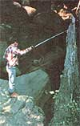
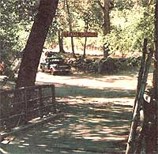

Why not get paid for your move to the country?
My family and I had reached what appeared to be a dead end. We had spent years planning to move to the country, buy land, and build our own home . . . but found it impossible to save up enough money to finance our dream, especially since the cost of land here in California jumps yearly.
When we had just about given up on our back-to-the-land ambitions, however, some friends told us about an opening for a manager/caretaker of an older, 120-acre resort in northern California. Despite our lack of experience, the owners (who live 100 miles away) offered us the job.
That opportunity forced me to make a major decision: Should I quit my secure state job which had provided a livable income for 10 years-to take a position that paid almost nothing? Even though most of my fellow workers thought I was crazy, I gave my notice, and-two weeks later-we moved.
Although my wife did have some business experience-and I could change a fuse and put a new washer in a faucet we knew nothing at all about resort management. (We didn't even own a pickup truck . . . and I was forced to haul away campground-sized loads of garbage in my VW bug!)
However, through the process of trial and error, we've begun to master this new business. The biggest points in our favor-right from the beginning-have been our willingness to work hard and our honesty. Moreover, the whole family has figured out ways to "pull together" in order to take care of the 21-site campground, six housekeeping cabins, lodge, and large swimming pool . . . plus the immediate grounds and a five-acre walnut and fruit tree orchard. We deal with anywhere from one to 100 vacationers a day . . . and-after the first summer I'll have to admit that I was ready for the "holidays" to end!
Not that there isn't plenty of work to be done in the winter time, too: During the off-season we cut and split wood, keep the gravity-flow water system open, and prepare the resort for the coming spring. Yet the only time clock we punch is our own schedule . . . and if we feel like going for a walk in the middle of the day, we're free to do so.
The resort is located at the 2,000-foot level, and our forest is made up of oak, pine, fir, madrone, aspen, bay, and manzanita. As I write this on the porch of our rent-free cabin, I can listen to the spring fed creek and watch the sunset color a nearby canyon. We have a large garden to share with the squirrels and the deer . . . and plenty of room to keep livestock if we wish.
There's no doubt that the move's been good for us. It has, for example, brought our family closer together . . . especially in the evenings when we stoke up the fire, sing songs, play games, read aloud, or go for walks under the stars. Our two children have room to grow, to run, and to explore . . . with no fear of being run over on a city street. They know what poison oak and rattlesnakes look like, and where the ladybugs hibernate. There are trees to climb, a creek to fish, trails to hike, and redtail hawks that soar in the morning sun.
Sometime in the near future we plan to install solar-heated showers for the campground and cabins, and develop some type of hydropower system for the lodge. (The latter's been done here before . . . since most of the resort buildings were constructed-over 50 years ago-from local timber which was cut by a small water-powered mill.)
The property may not be ours, but for now it's home . . . and a very big step in the right direction. We have the time and the energy to develop new ways to find our own place. I'm able to pursue my interest in photography and have had some small success as a free-lancer. We've even discussed opening a crafts shop to cater to the summer tourist trade.
Therefore, my advice to all you would be country folks is to keep your eyes, ears, and minds open . . . and-when an opportunity such as ours comes along grab it! Don't wait for your dreams to come true by themselves. You can-with a little bit of work and commitment make your fantasies into reality!
|
 PHOTOS BY THE AUTHOR |
 |
|